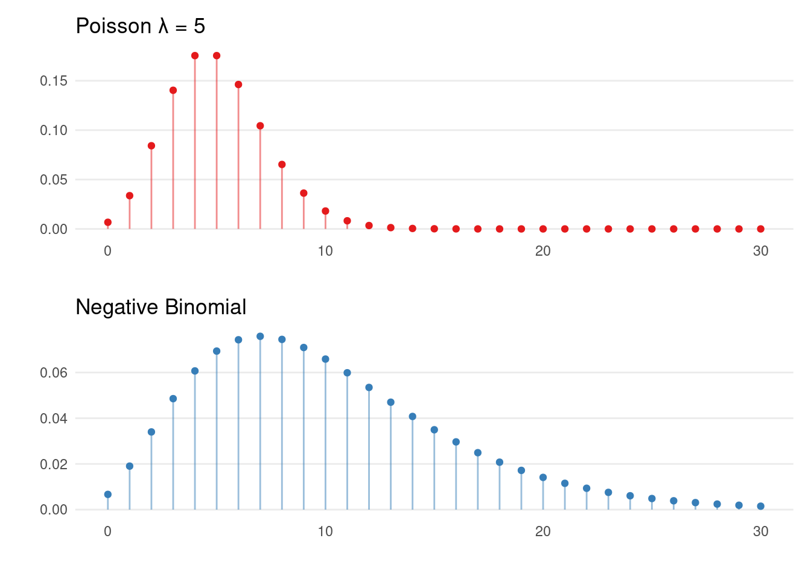

2 Introduction
This material is under constant development and will be used to show fundamental concepts of data science.
Example:
Operational Risk. Loss Distribution Approach.
Creating sequence of dates. Simulated values will be regarded to a weekly period of time.
library(tidyverse)
# sequence of dates (weekly)
date_seq <- seq.Date(from = as.Date("2022-01-01"),
to = as.Date("2022-06-30"),
by = "week")
# number of weeks
n_week <- length(date_seq)Simulating data-set with poisson and negative binomial distributions. (explicar parametros e o que os valores da tabela significam. abc)
sim_data <- data.frame(
week = date_seq,
poisson = rpois(n = n_week, lambda = 15),
neg_bin = rnbinom(n = n_week, mu = 10, size = 4)
)
knitr::kable(
head(sim_data, 10), caption = "Simulated values",
booktabs = TRUE)| week | poisson | neg_bin |
|---|---|---|
| 2022-01-01 | 22 | 4 |
| 2022-01-08 | 17 | 14 |
| 2022-01-15 | 10 | 15 |
| 2022-01-22 | 12 | 12 |
| 2022-01-29 | 18 | 6 |
| 2022-02-05 | 12 | 16 |
| 2022-02-12 | 20 | 8 |
| 2022-02-19 | 14 | 7 |
| 2022-02-26 | 10 | 6 |
| 2022-03-05 | 14 | 24 |
Explaining the difference between distributions.
 Now we are going to use this values to simulate \(n\) observations for a continuous distribution and sum them up. This will be our simulated severity loss. Gamma, Log-normal and Weibull.
Customized function.
severidade <- function(n_dist, dist, pars) {
random_function <- switch(dist,
gamma = "rgamma",
lognormal = "rlnorm",
weibull = "rweibull",
stop("Invalid distribution")
)
parameters <- c("n" = n_dist, pars)
values <- do.call(what = random_function, args = parameters)
return(sum(values))
}Severity values with frquency genreated by poisson distribution
sev_pois <- sim_data %>%
select(week, poisson) %>%
dplyr::rowwise() %>%
mutate(
# gamma
gamma = severidade(
n_dist = poisson, dist = "gamma",
pars = list("shape" = 6, "rate" = 0.0006)
),
# log-normal
lnorm = severidade(
n_dist = poisson, dist = "lognormal",
pars = list("meanlog" = 9, "sdlog" = 0.4)
),
# weibull
weib = severidade(
n_dist = poisson, dist = "weibull",
pars = list("shape" = 2.75, "scale" = 12000)
)
)Reference a figure by its code chunk label with the fig: prefix, e.g., Similarly, you can reference tables generated from knitr::kable(), e.g., see Table 2.1.
You can write citations, too. For example, we are using the bookdown package (Xie 2022) in this sample book, which was built on top of R Markdown and knitr (Xie 2015).